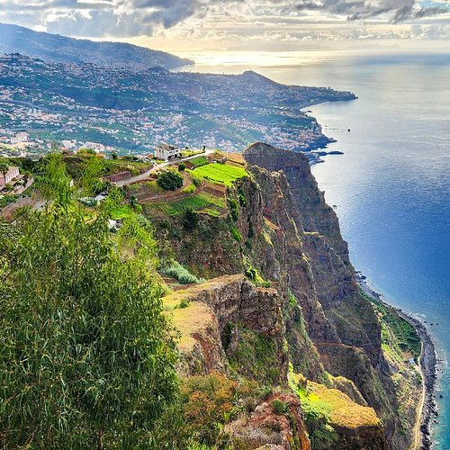

A Madeira é uma ilha portuguesa situada no oceano Atlântico e conhecida pelas suas paisagens deslumbrantes, pelo clima ameno e pela sua riqueza natural. É um destino turístico muito procurado por pessoas de todo o mundo, que visitam a ilha para conhecer a sua natureza, cultura e tradições.
A ilha da Madeira possui diversos locais de grande beleza natural e interesse turístico. O Funchal, a capital da ilha, destaca-se pelos seus jardins, mercados e ruas tradicionais. Outros locais muito conhecidos são o Pico do Areeiro, o Cabo Girão, o Porto Moniz e a Ponta de São Lourenço.
Visita o site oficial da Madeira
